Guide utilisateur BBC SMSBBC SMS User Guide
Le manuel complet du système de gestion scolaire : chaque module, écran par écran, du Primaire au Secondaire, en Français comme en Anglais. The complete school management system manual: every module, screen by screen, from Primary to Secondary, in French and English.
PrésentationOverview
BBC SMS est le système de gestion de Bayo Bilingual Complex. Il réunit dans une seule application la scolarité, les finances, la présence biométrique et la communication avec les parents — pour les deux sous-systèmes, francophone et anglophone.
L'application s'organise en 17 modules répartis en quatre familles :
- Communauté — Élèves, Parcours, Santé, Documents, Personnel
- Pédagogie — Académique, Présence, Discipline, Cahier de textes
- Opérations — Finance, Emploi du temps, Événements, Correspondance
- Pilotage — Tableau de bord, Alertes, Rapports, Paramètres
S'y ajoute un portail parent distinct, réservé aux comptes de rôle parent.
Les modules affichés dans le menu sont ceux que votre rôle est autorisé à consulter. Si un module décrit dans ce guide n'apparaît pas chez vous, c'est une question de permissions — voir Rôles & permissions.
BBC SMS is the management system of Bayo Bilingual Complex. It brings academics, finance, biometric attendance and parent communication together in a single application — across both the francophone and anglophone sub-systems.
The application is organised into 17 modules in four families:
- Community — Students, Journey, Health, Documents, Staff
- Education — Academic, Attendance, Discipline, Coursebook
- Operations — Finance, Timetable, Events, Correspondence
- Steering — Dashboard, Alerts, Reports, Settings
A separate parent portal serves accounts with the parent role.
The modules in your menu are the ones your role is allowed to open. If a module described in this guide is missing for you, that is a permissions matter — see Roles & permissions.
Se connecterSigning in
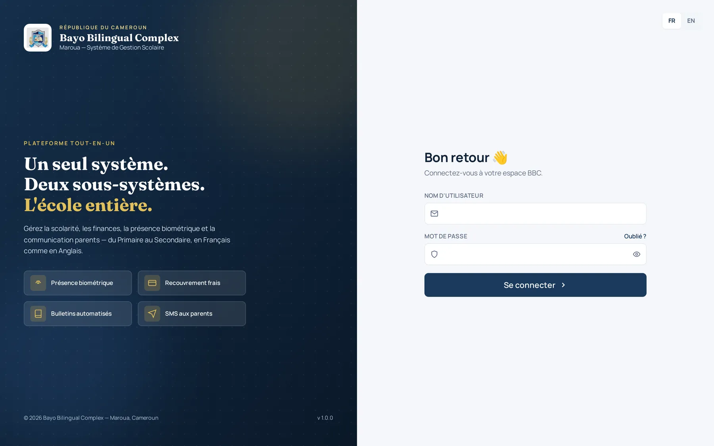
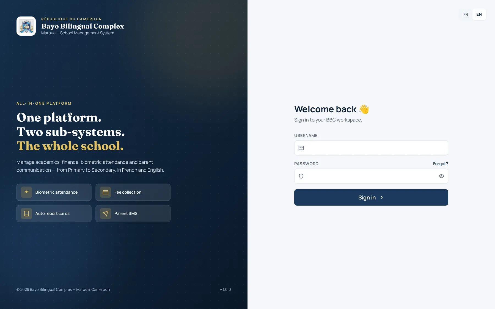
- Saisissez votre nom d'utilisateur et votre mot de passe.
- L'icône en forme d'œil, à droite du champ mot de passe, affiche ou masque ce que vous tapez.
- Cliquez sur Se connecter.
Selon votre rôle, vous arrivez ensuite sur le Tableau de bord (personnel de l'établissement) ou sur le portail parent (comptes parents).
Changer la langue
Le sélecteur FR / EN bascule toute l'interface, immédiatement et sans rechargement. Votre choix est mémorisé dans le navigateur : vous le retrouverez à la prochaine visite, sur ce poste. Ce réglage est propre au navigateur, pas au compte — un même utilisateur peut donc être en français sur un poste et en anglais sur un autre.
Le lien « Oublié ? » de l'écran de connexion n'est pas encore actif dans la version 1.0. Pour réinitialiser un mot de passe, adressez-vous à l'administrateur de l'établissement (rôle principal).
- Enter your username and password.
- The eye icon to the right of the password field shows or hides what you type.
- Click Sign in.
Depending on your role you then land on the Dashboard (school staff) or the parent portal (parent accounts).
Changing the language
The FR / EN switch flips the whole interface instantly, with no reload. Your choice is remembered in the browser, so it survives to your next visit on that machine. The setting belongs to the browser, not to the account — the same user can be in French on one machine and English on another.
The “Forgot?” link on the sign-in screen is not active in version 1.0. To reset a password, ask your school administrator (the principal role).
NavigationNavigation
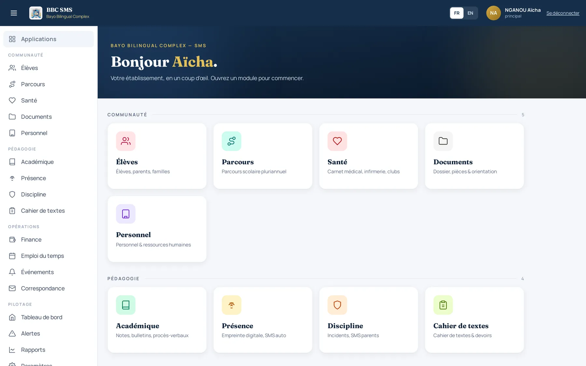
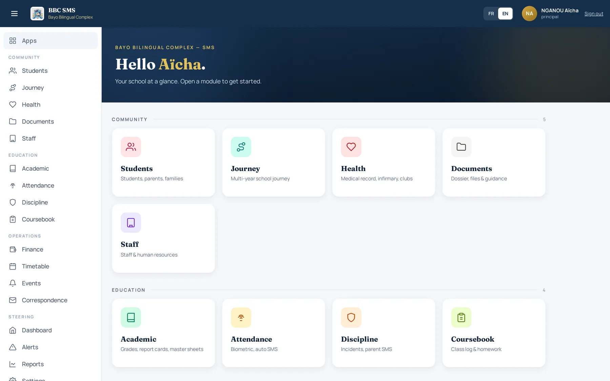
Deux façons d'ouvrir un module :
- la grille Applications ci-dessus — cliquez une carte ;
- le menu latéral, présent sur toutes les pages.
La barre du haut
| Élément | Rôle |
|---|---|
| ☰ (à gauche) | Replie le menu latéral en simple bande d'icônes, pour gagner de la largeur. Votre choix est mémorisé. |
| Logo BBC SMS | Ramène à la grille Applications. |
| FR / EN | Change la langue de l'interface. |
| Votre nom | Rappelle le compte connecté et son rôle. |
| Se déconnecter | Ferme la session et revient à l'écran de connexion. Sans confirmation — le clic est immédiat. |
Two ways to open a module:
- the Apps grid above — click a card;
- the sidebar, available on every page.
The top bar
| Item | Purpose |
|---|---|
| ☰ (left) | Collapses the sidebar to a strip of icons, freeing horizontal space. Your choice is remembered. |
| BBC SMS logo | Returns to the Apps grid. |
| FR / EN | Changes the interface language. |
| Your name | Shows the signed-in account and its role. |
| Sign out | Ends the session and returns to sign-in. There is no confirmation — the click acts at once. |
Rôles & permissionsRoles & permissions
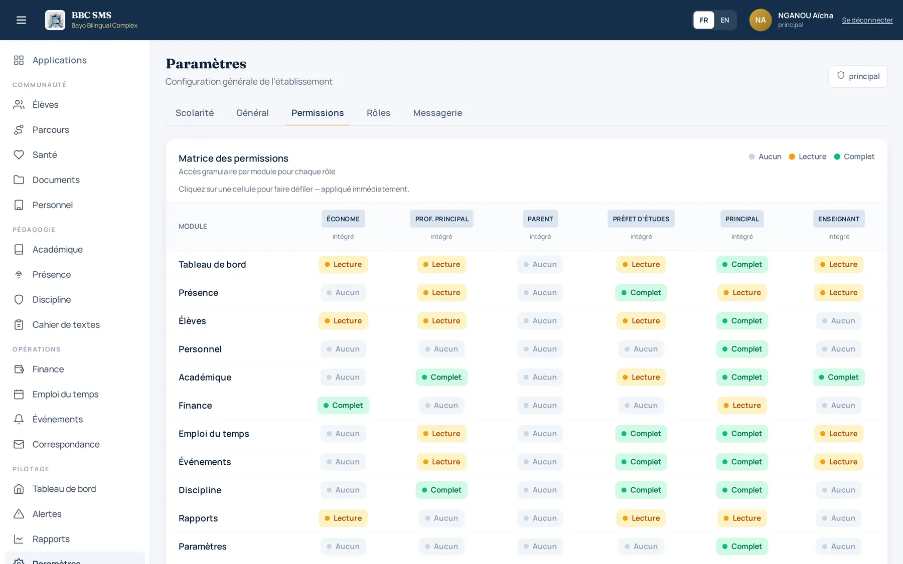
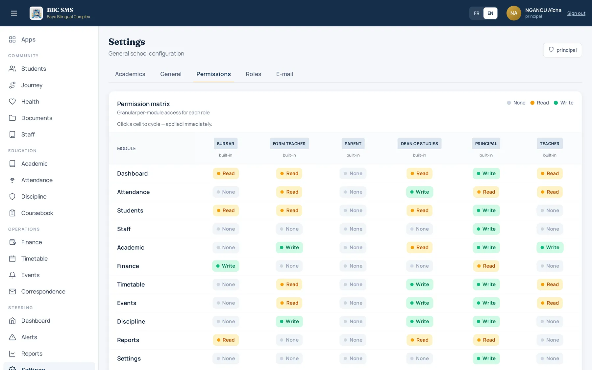
L'accès est gouverné par une matrice rôle × module. Chaque croisement vaut l'un de trois niveaux :
| Niveau | Ce que l'utilisateur peut faire |
|---|---|
| Aucun | Le module n'apparaît ni dans le menu, ni dans la grille Applications. L'URL directe renvoie vers Applications. |
| Lecture | Le module s'ouvre en consultation. Les boutons de création, modification et suppression sont masqués. |
| Complet | Consultation et modification. |
Les six rôles livrés avec le système sont : Principal, Préfet d'études, Économe, Prof. Principal, Enseignant et Parent.
Modifier une permission
Dans Paramètres → Permissions, cliquez une case : elle passe de Aucun à Lecture, puis à Complet, puis revient à Aucun. Il n'y a pas de bouton « Enregistrer » — le changement est appliqué immédiatement.
1. Un utilisateur déjà connecté ne verra pas ses menus changer tout de suite : ses permissions sont chargées à la connexion. Il doit se déconnecter puis se reconnecter pour que la nouvelle matrice s'applique à son interface.
2. La matrice ne couvre que 11 des 17 modules. Parcours, Santé, Documents, Cahier de textes, Correspondance et Alertes ne sont pas éditables ici dans la version 1.0.
Masquer un bouton n'est qu'un confort d'affichage : chaque requête est revalidée côté serveur. Un utilisateur ne peut donc rien faire de plus en contournant l'interface.
Access is governed by a role × module matrix. Each crossing holds one of three levels:
| Level | What the user can do |
|---|---|
| None | The module appears in neither the sidebar nor the Apps grid. A direct URL redirects to Apps. |
| Read | The module opens read-only. Create, edit and delete controls are hidden. |
| Write | Viewing and editing. |
The six roles shipped with the system are: Principal, Dean of studies, Bursar, Form Teacher, Teacher and Parent.
Changing a permission
In Settings → Permissions, click a cell: it cycles from None to Read to Write and back to None. There is no Save button — the change applies immediately.
1. A user who is already signed in will not see their menus change straight away: permissions are loaded at sign-in. They must sign out and back in for the new matrix to reach their interface.
2. The matrix covers only 11 of the 17 modules. Journey, Health, Documents, Coursebook, Correspondence and Alerts cannot be edited here in version 1.0.
Hiding a button is a display convenience only: every request is re-checked on the server. Bypassing the interface gains a user nothing.
ÉlèvesStudents
Élèves, parents, familles · permission studentsStudents, parents, families · students permission
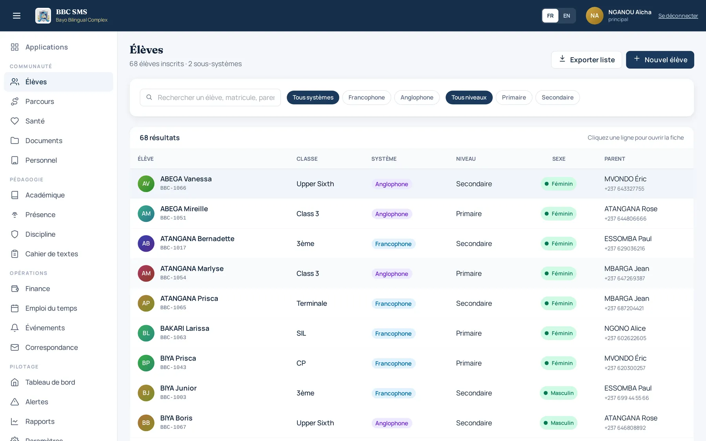
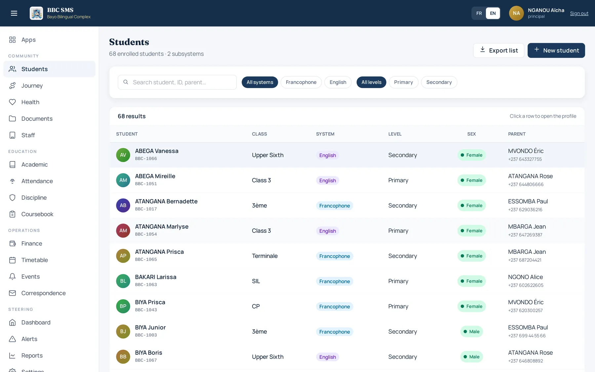
Trouver un élève
- La recherche porte sur le nom, le matricule et le nom du parent. Elle ne cherche pas dans la classe — pour cela, utilisez les filtres ou triez la colonne Classe.
- Les puces Tous systèmes / Francophone / Anglophone et Tous niveaux / Primaire / Secondaire restreignent la liste.
- Toutes les colonnes se trient par un clic sur leur en-tête.
Consulter une fiche
Cliquez une ligne : la fiche s'ouvre juste sous le tableau. Elle réunit l'identité, les informations du parent, les comptes parents liés, et l'état civil scolaire (matricule, date de naissance, classe, section).
Inscrire un élève
Nouvel élève ouvre un formulaire pleine page en trois blocs :
- Identité — Nom et Prénom (obligatoires), Sexe, Date de naissance.
- Scolarité — la Classe, choisie dans une liste. Le sous-système et le niveau en sont déduits automatiquement : vous n'avez pas à les saisir.
- Parent / tuteur — nom et téléphone.
Si aucune classe n'existe encore, le formulaire vous le signale. Passez par Paramètres → Scolarité pour créer sections puis classes, avant d'inscrire vos élèves.
Donner un accès au portail à un parent
Dans la fiche d'un élève, section Comptes parents → Ajouter. Renseignez le nom complet, un identifiant de connexion et un mot de passe.
Pour rattacher un second enfant à un parent existant, saisissez le même identifiant dans la fiche de cet autre enfant : le compte est relié, pas dupliqué. Le parent verra alors ses deux enfants dans son portail.
Supprimer
Supprimer demande une confirmation. L'élève et toutes ses données associées sont retirés du registre.
Finding a student
- Search matches the name, the student ID and the parent's name. It does not search the class — use the filters or sort the Class column for that.
- The All systems / Francophone / English and All levels / Primary / Secondary chips narrow the list.
- Every column sorts on a click of its header.
Opening a profile
Click a row and the profile opens just below the table. It gathers identity, parent details, linked parent accounts and school record (ID, date of birth, class, section).
Enrolling a student
New student opens a full-page form in three blocks:
- Identity — Last name and First name (required), Sex, Date of birth.
- Schooling — the Class, picked from a list. Sub-system and level are derived automatically: you do not enter them.
- Parent / guardian — name and phone.
If no class exists yet, the form says so. Go to Settings → Academics to create sections then classes before enrolling students.
Giving a parent portal access
In a student's profile, section Parent accounts → Add. Enter the full name, a login username and a password.
To attach a second child to an existing parent, enter the same username on that other child's profile: the account is linked, not duplicated. The parent will then see both children in their portal.
Deleting
Delete asks for confirmation. The student and all related data are removed from the registry.
ParcoursJourney
Parcours scolaire complet, année par année · permission journeyFull school journey, year by year · journey permission
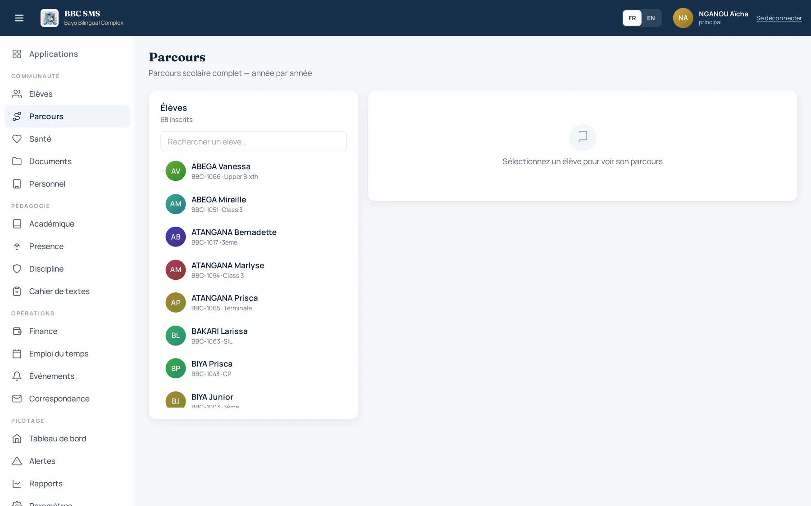
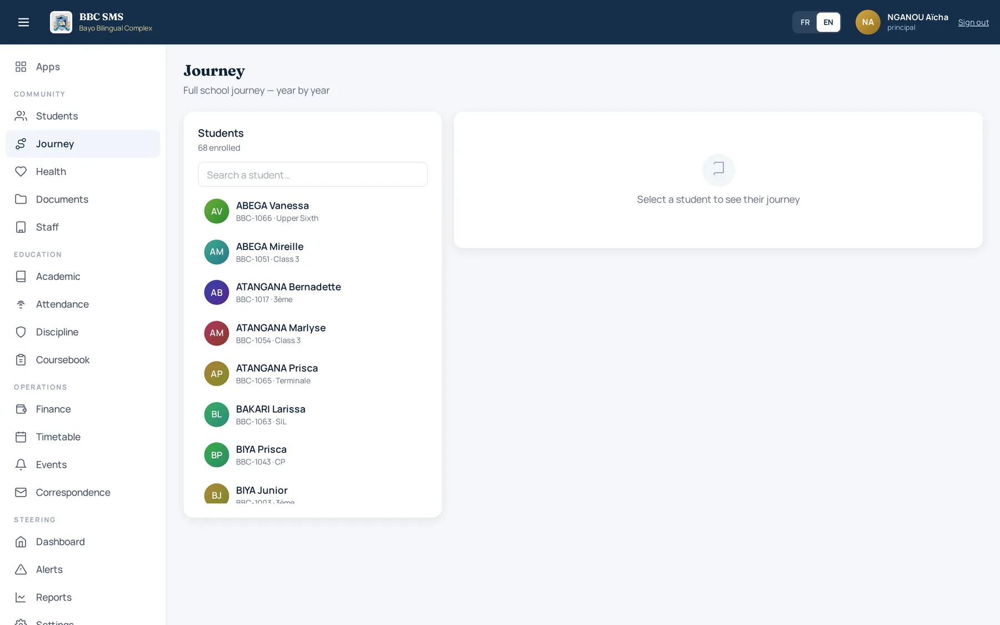
Ce module retrace la scolarité pluriannuelle d'un élève : les années passées dans l'établissement, les moyennes obtenues, les redoublements et les décisions de conseil de classe.
Le principe : choisir un élève d'abord
À gauche, la liste des élèves (avec une recherche sur le nom, le matricule ou la classe). Cliquez un élève et son parcours apparaît à droite. Tant qu'aucun élève n'est choisi, la partie droite reste vide — c'est normal.
Trois indicateurs résument le dossier : Années suivies, Meilleure moyenne et Redoublements. La courbe de progression n'apparaît qu'à partir de deux années renseignées.
Ajouter une année
Ajouter une année ouvre un formulaire sous les indicateurs. L'Année (ex. 2024-2025) et la Classe sont obligatoires ; viennent ensuite le résultat (En cours, Admis, Redoublé, Arrivée, Départ, Diplômé, Exclu), la moyenne sur 20, le rang, l'effectif de la classe et la décision du conseil.
Contrairement au module Élèves, ce champ n'est pas une liste déroulante. Écrivez la classe exactement comme dans votre nomenclature (ex. 4ème) afin que le parcours reste lisible d'une année sur l'autre.
Les icônes Modifier et Supprimer n'apparaissent qu'au survol d'une ligne (elles sont donc difficiles d'accès sur tablette). La suppression est immédiate et sans confirmation.
Si Enregistrer semble ne rien faire, c'est que l'Année ou la Classe est vide : aucun message d'erreur n'est affiché dans cette version.
This module traces a student's multi-year schooling: years spent at the school, averages obtained, repeated years and class-council decisions.
The principle: pick a student first
On the left, the student list (searchable by name, ID or class). Click a student and their journey appears on the right. Until you pick one, the right-hand side stays empty — that is expected.
Three indicators summarise the file: Years tracked, Best average and Repeats. The progression chart only appears once two years are recorded.
Adding a year
Add a year opens a form under the indicators. The Year (e.g. 2024-2025) and the Class are required; then come the result (In progress, Promoted, Repeated, Transferred in, Transferred out, Graduated, Excluded), the average out of 20, the rank, the class size and the council decision.
Unlike the Students module, this field is not a dropdown. Type the class exactly as in your own naming (e.g. Form 3) so the journey stays readable from year to year.
The Edit and Delete icons only appear when you hover a row (making them hard to reach on a tablet). Deletion is immediate and unconfirmed.
If Save appears to do nothing, the Year or Class is empty: no error message is shown in this version.
SantéHealth
Dossier médical, infirmerie et activités · permission healthMedical record, infirmary and activities · health permission
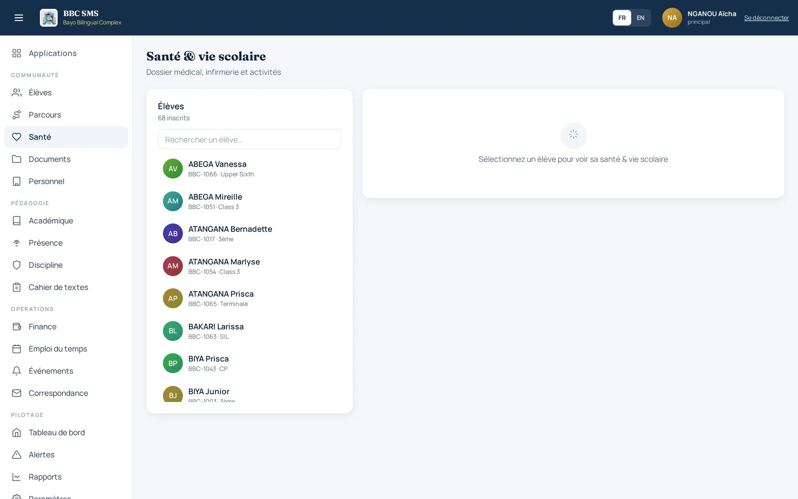
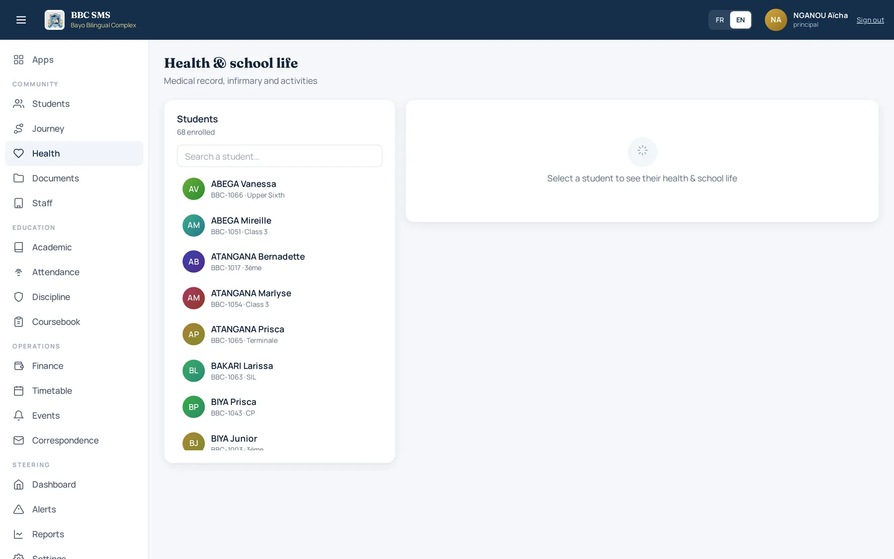
Comme pour Parcours, choisissez d'abord un élève dans la liste de gauche. La page se compose ensuite de trois cartes.
Dossier médical
Groupe sanguin, taille, poids, allergies, pathologies, vaccinations, médecin traitant et son téléphone. Cliquez Enregistrer le dossier pour valider vos modifications. En lecture seule, les champs restent visibles mais grisés.
Passages à l'infirmerie
La bande de saisie demande une date et un motif (tous deux obligatoires), plus le traitement prodigué. Ajouter enregistre le passage.
Activités extrascolaires
Un nom (obligatoire), une catégorie (Club, Sport, Art, Autre) et un rôle facultatif.
Les corbeilles des passages et des activités n'apparaissent qu'au survol et suppriment immédiatement, sans demander confirmation. Les passages et activités ne sont pas modifiables : pour corriger, supprimez puis ressaisissez.
As with Journey, pick a student first from the list on the left. The page then holds three cards.
Medical record
Blood group, height, weight, allergies, conditions, vaccinations, attending doctor and their phone. Click Save record to commit your changes. In read-only mode the fields stay visible but greyed out.
Infirmary visits
The entry strip asks for a date and a reason (both required), plus the treatment given. Add records the visit.
Extracurricular activities
A name (required), a category (Club, Sport, Art, Other) and an optional role.
The bins on visits and activities only appear on hover and delete immediately, without asking. Visits and activities cannot be edited: to correct one, delete it and re-enter it.
DocumentsDocuments
Dossier documentaire & décisions d'orientation · permission documentsDocument register & orientation decisions · documents permission
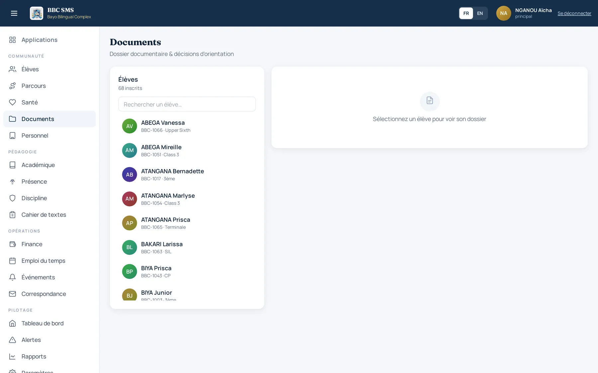
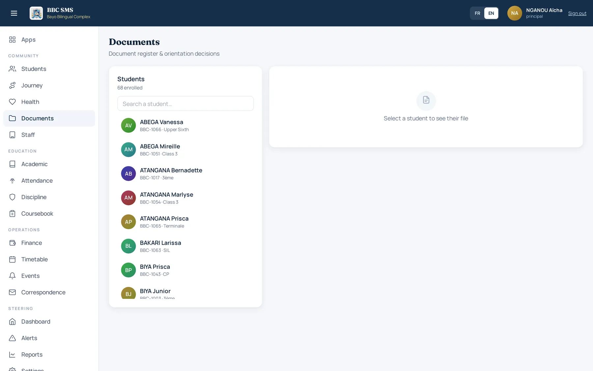
Il n'y a pas de téléversement de fichier dans la version 1.0. Vous n'y déposez pas un acte de naissance : vous notez qu'il existe, et où il se trouve. Le champ « Référence ou URL » accepte soit une référence physique (« classeur B, rangée 3 »), soit un lien http(s) vers un fichier hébergé ailleurs — auquel cas il devient cliquable.
There is no file upload in version 1.0. You do not deposit a birth certificate here: you record that it exists, and where it is. The “Reference or URL” field takes either a physical reference (“binder B, row 3”) or an http(s) link to a file hosted elsewhere — in which case it becomes clickable.
Choisissez un élève à gauche, puis travaillez sur deux cartes.
Registre des documents
Ajouter un document : le type (Acte de naissance, Photo, Bulletin antérieur, Certificat, Médical, Autre), un titre (obligatoire), la référence ou l'URL, et une note.
Décisions d'orientation
Ajouter une décision : l'année et l'étape (ex. « Orientation 3ème ») sont obligatoires ; puis la date du conseil, la recommandation et la décision finale.
Les deux listes se suppriment sans confirmation (icône visible au survol) et ne se modifient pas. Si Enregistrer ne réagit pas, un champ obligatoire est vide.
Pick a student on the left, then work across two cards.
Document register
Add a document: the kind (Birth certificate, Photo, Prior report, Certificate, Medical, Other), a title (required), the reference or URL, and a note.
Orientation decisions
Add a decision: the year and the stage (e.g. “Orientation Form 4”) are required; then the council date, the recommendation and the final decision.
Both lists delete without confirmation (the icon appears on hover) and cannot be edited. If Save does not react, a required field is empty.
PersonnelStaff
Annuaire, rôles et masse salariale · permission hrDirectory, roles and payroll · hr permission
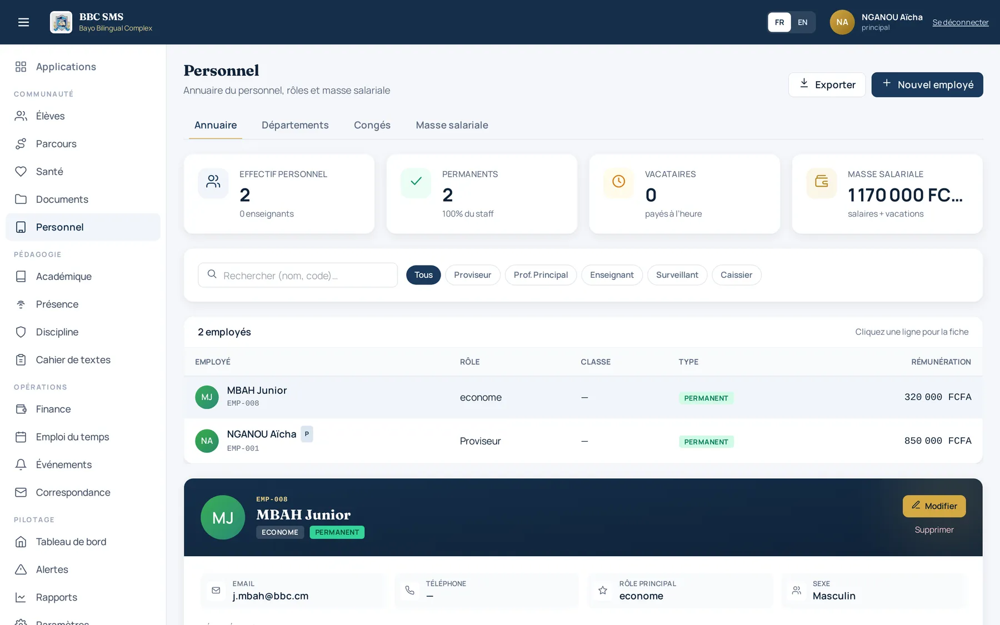
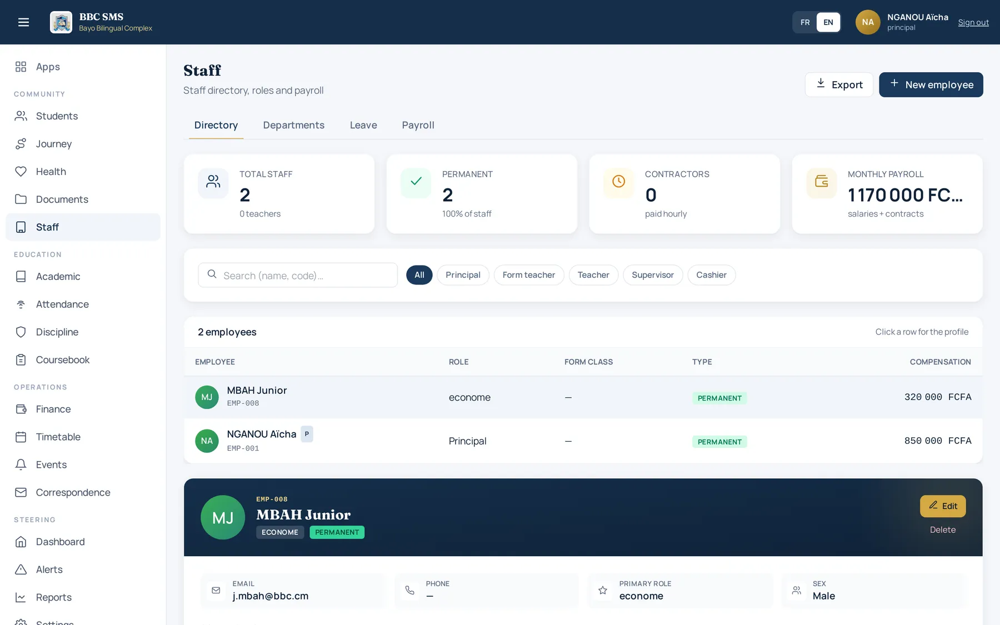
Quatre onglets : Annuaire, Départements, Congés et Masse salariale.
Annuaire
Recherche par nom ou code, filtre par rôle. Cliquez une ligne pour ouvrir la fiche : contacts, rôles, et rémunération.
Créer un employé
Nouvel employé ouvre un formulaire pleine page :
- Identité & contact — Nom (obligatoire), Sexe, Email, Téléphone.
- Rôles — plusieurs rôles cumulables (Proviseur, Prof. Principal, Enseignant, Surveillant, Caissier). Le champ Classe n'apparaît que si vous cochez Prof. Principal.
- Département — à créer au préalable dans l'onglet Départements.
- Contrat — Permanent (salaire mensuel) ou Vacataire (taux horaire). Le champ de rémunération s'adapte à votre choix.
Départements
Nouveau département : un nom (obligatoire) et, facultativement, un responsable choisi parmi le personnel. La suppression demande confirmation.
Congés
Nouvelle demande : l'employé, le type (annuel, maladie, maternité, sans solde, autre), les dates de début et de fin, et un motif. Le nombre de jours est calculé pour vous. Les demandes en attente se traitent par les icônes ✓ Approuver et ✗ Refuser — sans confirmation.
Supprimer un employé ne demande aucune confirmation et est définitif. Soyez attentif : ce comportement diffère de celui des départements et des élèves, qui eux confirment.
La Masse salariale n'est fiable que pour les Permanents. Pour les Vacataires, le système additionne un taux horaire à des salaires mensuels, sans multiplier par un nombre d'heures. Ne vous appuyez pas sur ce total pour une paie réelle.
Four tabs: Directory, Departments, Leave and Payroll.
Directory
Search by name or code, filter by role. Click a row to open the profile: contacts, roles and compensation.
Creating an employee
New employee opens a full-page form:
- Identity & contact — Name (required), Sex, Email, Phone.
- Roles — several roles can be combined (Principal, Form teacher, Teacher, Supervisor, Cashier). The Form class field only appears if you tick Form teacher.
- Department — create it first in the Departments tab.
- Contract — Permanent (monthly salary) or Contractor (hourly rate). The compensation field adapts to your choice.
Departments
New department: a name (required) and, optionally, a head picked from the staff. Deleting asks for confirmation.
Leave
New request: the employee, the type (annual, sick, maternity, unpaid, other), the start and end dates, and a reason. The number of days is computed for you. Pending requests are handled with the ✓ Approve and ✗ Reject icons — without confirmation.
Deleting an employee asks for no confirmation and is permanent. Take care: this differs from departments and students, which do confirm.
Payroll is only reliable for Permanent staff. For Contractors the system adds an hourly rate to monthly salaries without multiplying by any number of hours. Do not rely on this total for real payroll.
AcadémiqueAcademic
Bulletins et procès-verbaux · permission academicReport cards and master sheets · academic permission
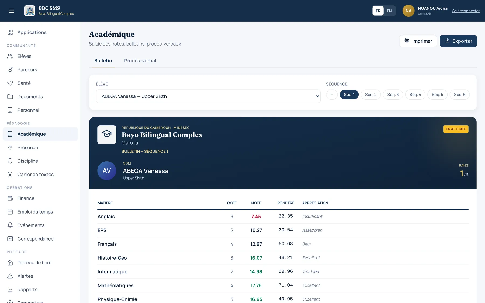
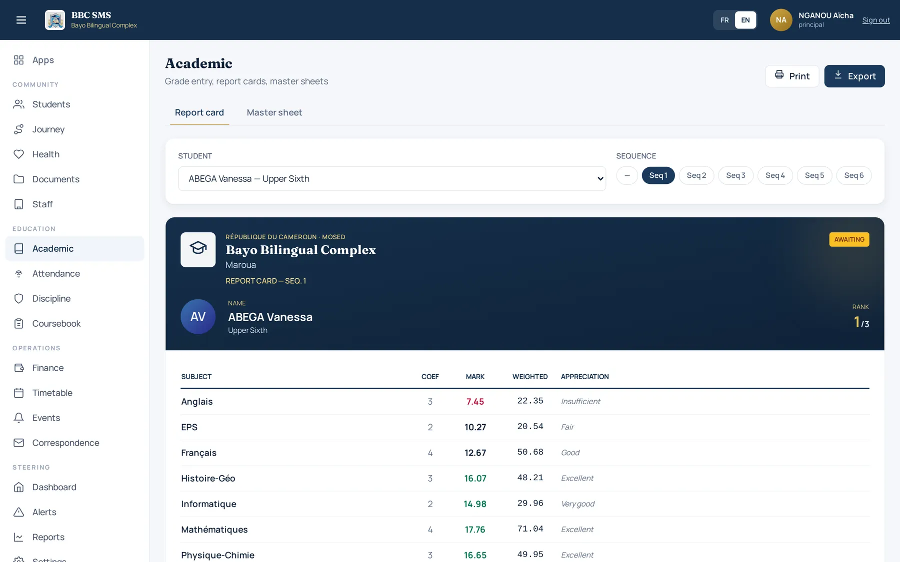
Deux onglets : Bulletin (un élève) et Procès-verbal (toute une classe).
Éditer un bulletin
- Choisissez un élève dans la liste déroulante.
- Choisissez une séquence (Séq. 1 à 6) parmi les puces.
Le bulletin s'affiche : une ligne par matière avec le coefficient, la note, le total pondéré et une appréciation automatique. La moyenne, le rang et la moyenne de la classe sont calculés par le serveur.
Le barème des appréciations : ≥ 16 Excellent · ≥ 14 Très bien · ≥ 12 Bien · ≥ 10 Assez bien · ≥ 8 Passable · en deçà, Insuffisant.
Valider un bulletin
En permission Complet, saisissez l'appréciation générale puis cliquez Valider le bulletin. Le bandeau passe alors de En attente à Validé.
Aucune fonction ne permet de dévalider un bulletin dans la version 1.0. L'appréciation générale s'enregistre au moment de la validation : il n'y a pas d'enregistrement séparé.
Blocage pour dette
Si l'élève a un solde de frais impayé, le bulletin est marqué Bloqué et un bandeau l'indique. La validation devient impossible et l'appréciation passe en lecture seule. Les notes, elles, restent consultables. Régularisez le solde dans Finance pour débloquer.
Procès-verbal
Onglet Procès-verbal : saisissez une classe, choisissez une séquence, puis cliquez Charger le PV. Vous obtenez le classement de la classe et sa moyenne générale.
Le bouton Imprimer ouvre la fenêtre d'impression du navigateur ; choisissez « Enregistrer au format PDF » pour obtenir un fichier. Notez que le bouton Exporter fait exactement la même chose : il n'y a pas encore de génération de PDF ni d'export de fichier dans cette version.
Two tabs: Report card (one student) and Master sheet (a whole class).
Producing a report card
- Pick a student from the dropdown.
- Pick a sequence (Seq 1 to 6) from the chips.
The report card appears: one row per subject with the coefficient, the mark, the weighted total and an automatic appreciation. The average, the rank and the class average are computed by the server.
The appreciation scale: ≥ 16 Excellent · ≥ 14 Very good · ≥ 12 Good · ≥ 10 Fair · ≥ 8 Pass · below that, Insufficient.
Validating a report card
With Write permission, enter the overall appreciation then click Validate report card. The banner moves from Awaiting to Validated.
There is no un-validate function in version 1.0. The overall appreciation is saved at the moment of validation: there is no separate save.
Blocking on unpaid fees
If the student has an outstanding fee balance, the report card is marked Blocked and a banner says so. Validation becomes impossible and the appreciation turns read-only. The marks themselves stay visible. Settle the balance in Finance to unblock.
Master sheet
On the Master sheet tab: type a class, pick a sequence, then click Load master sheet. You get the class ranking and its general average.
The Print button opens the browser's print dialog; choose “Save as PDF” to get a file. Note that the Export button does exactly the same thing: there is no PDF generation or file export in this version yet.
PrésenceAttendance
Lecteur d'empreintes digitales, temps réel · permission presenceFingerprint reader, realtime · presence permission
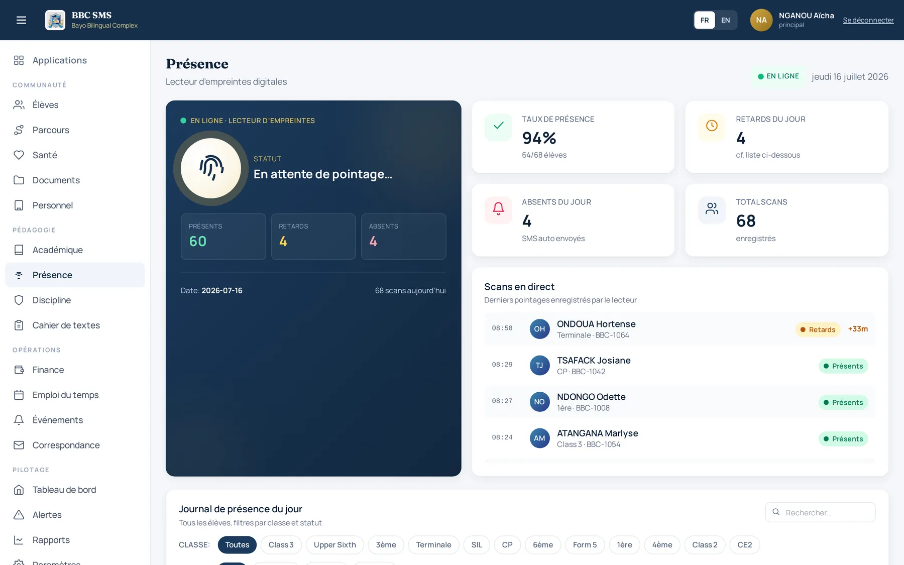
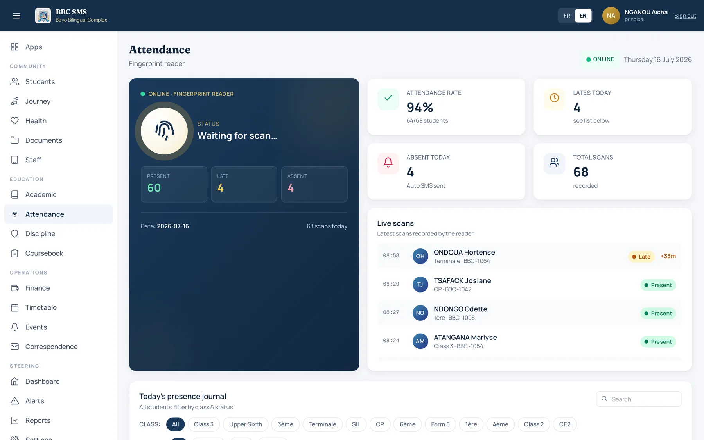
C'est le module « temps réel » du système. Lorsqu'un élève pose son doigt sur le lecteur à l'entrée, la ligne apparaît sur cette page en une seconde, sans rafraîchir.
Lire la page
- La grande carte sombre à gauche est le lecteur : elle affiche le dernier élève scanné, avec son heure de passage.
- Les quatre indicateurs donnent le taux de présence, les retards, les absents et le total des scans.
- Scans en direct liste les 12 derniers passages, le plus récent en tête.
- Journal de présence du jour reprend tous les élèves, avec recherche (nom ou matricule) et filtres par classe et par statut.
La présence se saisit par le lecteur d'empreintes, pas ici : il n'y a ni bouton ni formulaire de pointage manuel dans la version 1.0.
Le bandeau vert En ligne est affiché en permanence : il ne reflète pas l'état réel du lecteur, qui n'est pas interrogé. Un lecteur débranché continuera d'afficher « En ligne ». Pour vérifier qu'il fonctionne vraiment, faites un pointage de test et regardez si la ligne apparaît.
Le compteur Total scans compte tous les élèves du tableau, y compris les absents — ce n'est donc pas un nombre de scans. Et si vous laissez la page ouverte après minuit, elle continue d'afficher la veille : rechargez-la chaque matin.
This is the system's “realtime” module. When a student puts their finger on the reader at the gate, the row appears on this page within a second, without refreshing.
Reading the page
- The large dark card on the left is the reader: it shows the last student scanned, with their check-in time.
- The four indicators give the attendance rate, the lates, the absentees and the scan total.
- Live scans lists the last 12 check-ins, newest first.
- Today's presence journal lists every student, with search (name or ID) and filters by class and status.
Attendance is captured by the fingerprint reader, not here: there is no manual check-in button or form in version 1.0.
The green Online badge is always displayed: it does not reflect the reader's actual state, which is never polled. An unplugged reader will still read “Online”. To check it really works, do a test scan and see whether the row appears.
The Total scans counter counts every student on the board, absentees included — so it is not a number of scans. And if you leave the page open past midnight it keeps showing the previous day: reload it each morning.
DisciplineDiscipline
Incidents et sanctions · permission disciplineIncidents and sanctions · discipline permission
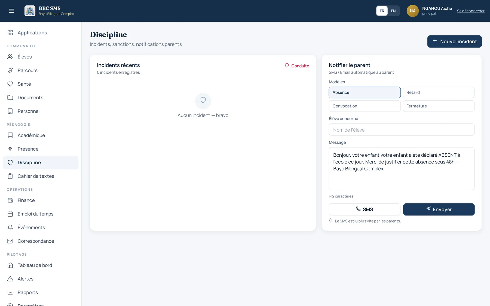
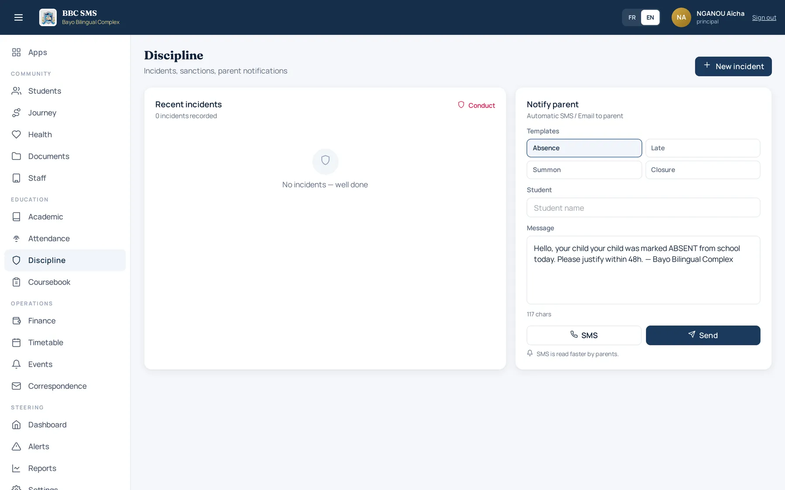
Enregistrer un incident
Nouvel incident ouvre un panneau de saisie. Le matricule, la date et le type sont obligatoires. Le type se choisit parmi Retard, Absence, Conduite, Tenue, et la sanction parmi Avertissement verbal, Avertissement écrit, Convocation parent, Exclusion temporaire, Conseil de discipline.
C'est qu'un des trois champs obligatoires est vide. Aucun message ne le signale dans cette version.
Un incident se crée et se supprime, mais ne se modifie pas. La corbeille supprime sans confirmation.
Le panneau « Notifier le parent »
Les boutons SMS et Envoyer ne sont pas raccordés dans la version 1.0 : cliquer dessus ne fait rien. Le panneau prépare un texte à partir de modèles (Absence, Retard, Convocation, Fermeture), mais aucune passerelle SMS ou e-mail n'est branchée.
Utilisez-le comme un aide-rédaction : cliquez la cloche d'un incident pour pré-remplir le message, puis copiez le texte et envoyez-le par votre propre moyen. La zone de texte est en lecture seule, mais son contenu reste sélectionnable.
Recording an incident
New incident opens an entry panel. The student ID, the date and the type are required. The type is picked from Retard, Absence, Conduite, Tenue, and the sanction from Avertissement verbal, Avertissement écrit, Convocation parent, Exclusion temporaire, Conseil de discipline.
The type and sanction options are not translated in version 1.0 — they read in French even in English mode. If Save does not react, one of the three required fields is empty; no message says so.
An incident can be created and deleted, but not edited. The bin deletes without confirmation.
The “Notify parent” panel
The SMS and Send buttons are not wired in version 1.0: clicking them does nothing. The panel drafts text from templates (Absence, Late, Summon, Closure), but no SMS or e-mail gateway is connected.
Use it as a drafting aid: click an incident's bell to pre-fill the message, then copy the text and send it by your own means. The text area is read-only, but its content stays selectable.
Cahier de textesCoursebook
Journal de classe & devoirs, jour par jour · permission coursebookDaily class log & homework · coursebook permission
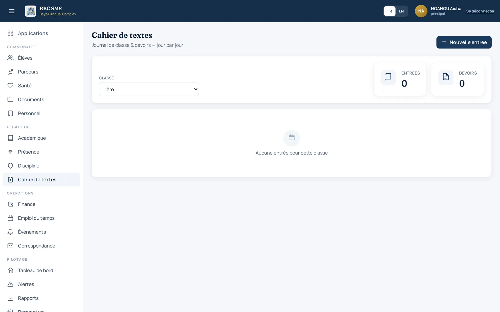
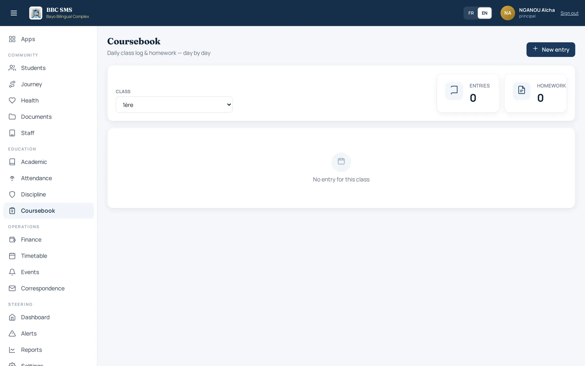
Choisissez d'abord une classe dans la liste déroulante : c'est elle qui commande toute la page. Le bouton Nouvelle entrée n'apparaît qu'une fois une classe sélectionnée.
Ajouter une séance
Le formulaire demande la matière, la date du cours et le contenu (ces trois-là sont obligatoires), puis, facultativement, le devoir à faire et sa date de remise.
Les entrées sont regroupées par journée, la plus récente en haut. Deux compteurs indiquent le nombre d'entrées et de devoirs de la classe.
Corriger une entrée
Survolez une entrée : les icônes Modifier et Supprimer apparaissent. Contrairement aux autres modules, le cahier de textes autorise la modification d'une entrée. La suppression, elle, reste immédiate et sans confirmation.
Elle est figée à huit matières (Mathématiques, Français, Anglais, Histoire-Géographie, SVT, Physique-Chimie, EPS, Informatique) et n'est pas liée à celles que vous créez dans Paramètres → Scolarité → Matières.
Pick a class first from the dropdown: it drives the whole page. The New entry button only appears once a class is selected.
Adding a lesson
The form asks for the subject, the lesson date and the content (these three are required), then optionally the homework and its due date.
Entries are grouped by day, most recent first. Two counters show the class's number of entries and homework items.
Correcting an entry
Hover an entry: the Edit and Delete icons appear. Unlike other modules, the coursebook does allow an entry to be edited. Deletion, however, stays immediate and unconfirmed.
It is fixed at eight subjects (Mathematics, French, English, History-Geography, Biology, Physics-Chemistry, PE, Computing) and is not linked to the ones you create in Settings → Academics → Subjects.
FinanceFinance
Encaissements, frais, dépenses · permission financePayments, fees, expenses · finance permission
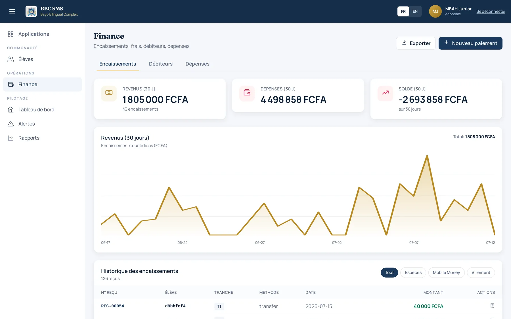
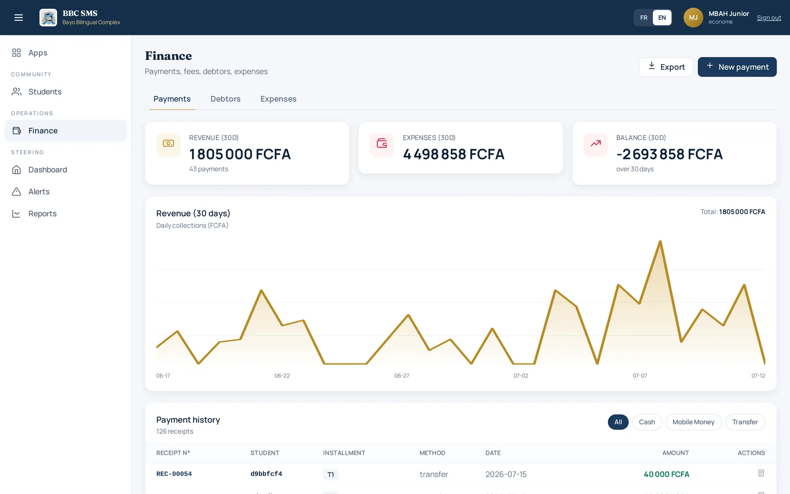
Encaissements
Trois indicateurs sur 30 jours (revenus, dépenses, solde), la courbe des encaissements quotidiens, puis l'historique des reçus. La puce Tout / Espèces / Mobile Money / Virement filtre par mode de paiement. L'icône en bout de ligne réaffiche le reçu.
Enregistrer un paiement
Nouveau paiement ouvre une fenêtre :
- Élève — saisissez son matricule ou son identifiant. Ce champ est libre : il n'y a pas de liste de choix, vérifiez donc bien votre saisie.
- Tranche — T1, T2 ou T3.
- Montant — en FCFA.
- Méthode — Espèces, Mobile Money ou Virement.
Cliquez Générer le reçu : le paiement est enregistré et le reçu s'affiche aussitôt. Le bouton Imprimer du reçu ouvre la fenêtre d'impression du navigateur.
Il n'y a pas de champ date dans le formulaire. Pour saisir un encaissement rétroactif, la version 1.0 ne le permet pas depuis cette fenêtre.
Ils affichent « Données débiteurs non disponibles » et « Détail des dépenses non disponible ». Ce n'est pas une erreur de votre part et ce n'est pas un problème de permissions : ces deux écrans ne sont pas encore raccordés, bien que les données existent côté serveur. Le total des dépenses sur 30 jours reste toutefois juste dans l'indicateur du haut.
En attendant, la liste des impayés se retrouve indirectement : un bulletin bloqué (voir Académique) signale un élève débiteur, et le portail parent affiche le solde de chaque enfant.
La colonne « Élève » de l'historique affiche un identifiant technique abrégé, pas le nom de l'élève. Le bouton Exporter n'est pas actif. Enfin, la configuration des frais n'a pas d'écran dans cette version.
Payments
Three 30-day indicators (revenue, expenses, balance), the daily collections curve, then the receipt history. The All / Cash / Mobile Money / Transfer chip filters by payment method. The icon at the end of a row re-opens the receipt.
Recording a payment
New payment opens a modal:
- Student — type their ID. This field is free text: there is no picker, so check your entry carefully.
- Installment — T1, T2 or T3.
- Amount — in FCFA.
- Method — Cash, Mobile Money or Transfer.
Click Generate receipt: the payment is recorded and the receipt appears at once. The receipt's Print button opens the browser print dialog.
There is no date field in the form. Version 1.0 does not allow a back-dated payment from this modal.
They show “Debtor data not available” and “Expense detail not available”. This is not your mistake and not a permissions problem: these two screens are not wired up yet, even though the data exists on the server. The 30-day expense total in the indicator above is nonetheless correct.
In the meantime, unpaid balances surface indirectly: a blocked report card (see Academic) flags a student in debt, and the parent portal shows each child's balance.
The history's “Student” column shows a shortened technical identifier, not the student's name. The Export button is not active. And there is no fee configuration screen in this version.
Emploi du tempsTimetable
Grilles, créneaux, conflits · permission timetableGrids, slots, conflicts · timetable permission
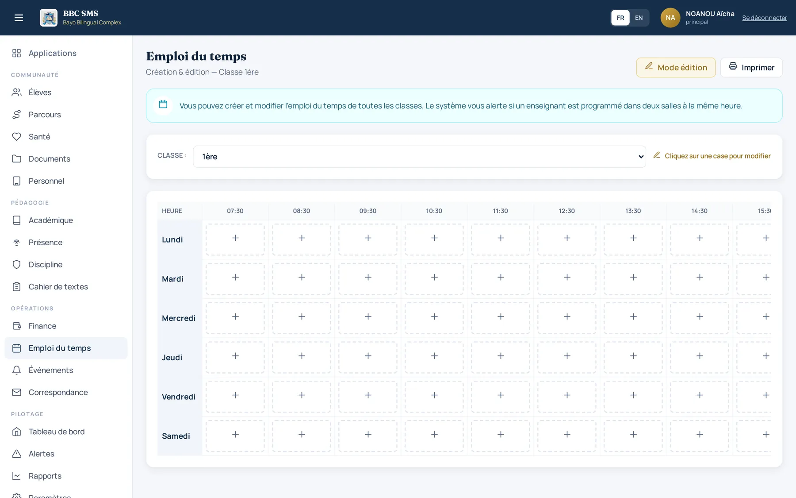
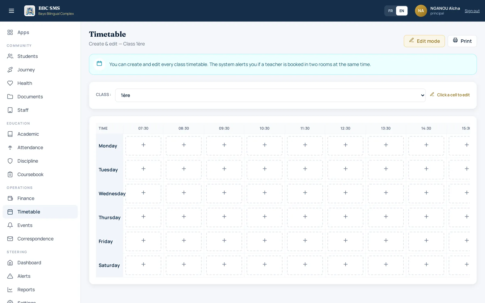
Choisissez une classe pour afficher sa grille. Les jours sont en lignes, les heures en colonnes (du lundi au samedi, de 07:30 à 15:30).
Placer ou modifier un cours
En permission Complet, cliquez une case — vide ou occupée. Un éditeur s'ouvre sous la grille et demande trois champs libres : Matière (code) (ex. MATH), Enseignant (id) et Salle. Cliquez Enregistrer. Pour vider une case, ouvrez-la et cliquez Supprimer — sans confirmation.
La détection de conflits
C'est la valeur ajoutée du module : si vous programmez un enseignant dans deux classes à la même heure, un bandeau rouge « Conflits d'enseignant détectés » apparaît après l'enregistrement, et la case concernée est cerclée de rouge.
1. Le conflit n'est pas bloquant : votre créneau est déjà enregistré quand l'alerte s'affiche. À vous de corriger.
2. Les conflits ne sont détectés qu'au moment où vous enregistrez un créneau. Ouvrir une grille ou changer de classe n'en cherche pas : un conflit déjà présent en base restera invisible tant que vous n'aurez pas ré-enregistré l'un des deux créneaux.
3. Le bandeau liste les conflits de toutes les classes, mais le cerclage rouge ne s'affiche que sur la classe affichée. Lisez le bandeau : il nomme la classe concernée.
Les cases affichent l'identifiant de l'enseignant, pas son nom. Le bouton Imprimer de cette page n'est pas actif ; utilisez l'impression du navigateur (Ctrl+P).
Pick a class to show its grid. Days run down the rows, hours across the columns (Monday to Saturday, 07:30 to 15:30).
Placing or changing a lesson
With Write permission, click a cell — empty or filled. An editor opens below the grid and asks for three free-text fields: Subject (code) (e.g. MATH), Teacher (id) and Room. Click Save. To clear a cell, open it and click Delete — without confirmation.
Conflict detection
This is the module's real value: if you book a teacher into two classes at the same hour, a red “Teacher clashes detected” banner appears after saving, and the cell is ringed in red.
1. A clash is not blocking: your slot is already saved by the time the alert shows. Correcting it is up to you.
2. Clashes are only detected when you save a slot. Opening a grid or switching class does not look for them: a clash already in the database stays invisible until you re-save one of the two slots.
3. The banner lists clashes across all classes, but the red ring only shows on the class on screen. Read the banner: it names the class concerned.
Cells show the teacher's identifier, not their name. This page's Print button is not active; use the browser's print (Ctrl+P).
ÉvénementsEvents
Annonces de l'école & notifications · permission eventsSchool announcements & notifications · events permission
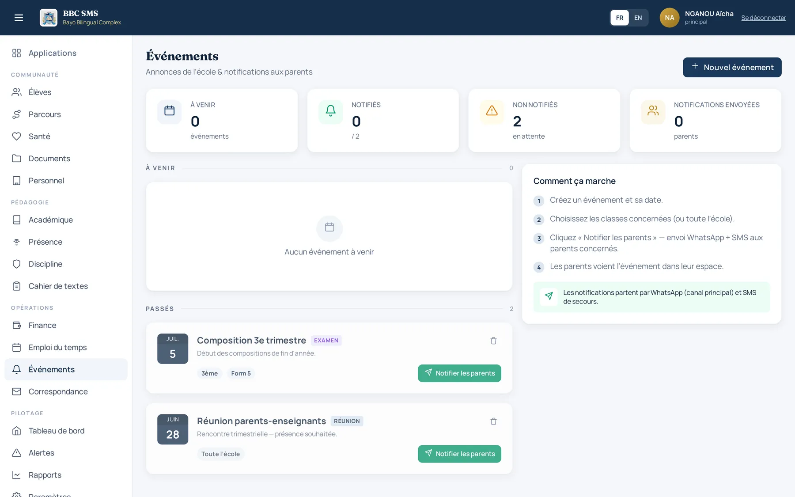
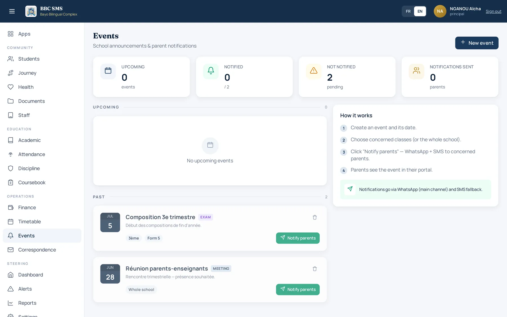
Créer un événement
Nouvel événement ouvre une fenêtre : le titre et la date sont obligatoires ; puis le type (Réunion, Examen, Culturel, Annonce), une description, et le public ciblé — Toute l'école ou Classes ciblées.
Si vous choisissez « Classes ciblées », un champ libre attend vos classes séparées par des virgules (ex. 6ème, 5ème). Il n'y a pas de liste à cocher : orthographiez-les exactement comme dans votre registre, sinon le décompte des destinataires retombera à zéro.
« Notifier les parents »
Il marque l'événement comme Notifié et affiche un nombre de destinataires — lequel est un décompte d'élèves concernés, pas un nombre de messages partis. Le panneau « Comment ça marche » annonce un envoi WhatsApp et SMS : cette passerelle n'existe pas encore. Aucun SMS, aucun WhatsApp, aucun e-mail ne quitte le système.
Servez-vous-en comme d'un suivi : « cet événement a été communiqué », la diffusion se faisant par vos canaux habituels. L'action est irréversible — on ne peut pas « dé-notifier ».
Un événement se crée et se supprime (sans confirmation), mais ne se modifie pas. Seuls les 5 derniers événements passés sont affichés.
Creating an event
New event opens a modal: the title and date are required; then the type (Meeting, Exam, Cultural, Announcement), a description, and the target audience — Whole school or Selected classes.
If you choose “Selected classes”, a free-text field expects your classes separated by commas (e.g. Form 1, Form 2). There is no checklist: spell them exactly as in your registry, or the recipient count will fall to zero.
“Notify parents”
It marks the event as Notified and displays a recipient number — which is a count of students concerned, not a number of messages sent. The “How it works” panel announces WhatsApp and SMS delivery: that gateway does not exist yet. No SMS, no WhatsApp and no e-mail leaves the system.
Treat it as a tracker: “this event has been communicated”, the actual sending being done through your usual channels. The action is irreversible — there is no “un-notify”.
An event can be created and deleted (without confirmation) but not edited. Only the 5 most recent past events are shown.
CorrespondanceCorrespondence
Carnet de correspondance avec accusé de lecture · permission messagesCorrespondence book with read-acknowledgement · messages permission
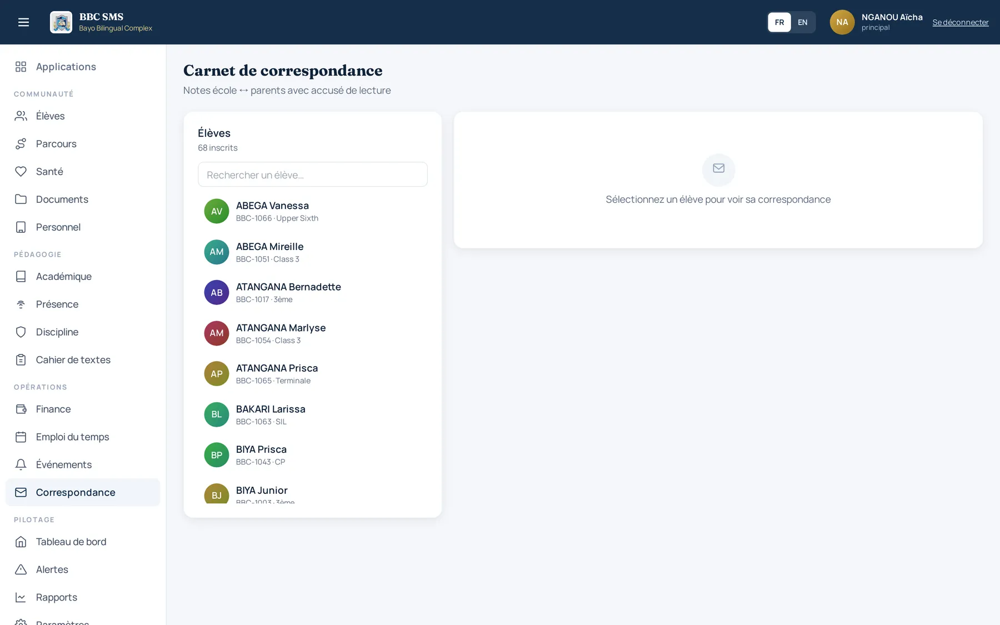
C'est le carnet de liaison école ↔ parents, avec accusé de lecture. Choisissez un élève à gauche (recherche par nom, matricule ou classe) pour voir sa correspondance.
Écrire une note
Nouvelle note : choisissez une catégorie (Information, Convocation, Absence, Rappel, Félicitations), cochez ou non Accusé de lecture requis (coché par défaut), puis saisissez l'objet et le message.
Le bouton enregistre la note dans le carnet ; il ne l'expédie pas au parent par SMS ou e-mail. Si l'objet ou le message est vide, le bouton ne réagit pas — sans message d'erreur.
Accuser réception
Une note en attente affiche Marquer comme lu. Une fenêtre demande alors le nom du parent signataire, et la note passe en « Lu / signé par… ».
C'est un membre du personnel qui saisit le nom du parent, au vu du carnet physique ou de sa parole. Ce n'est pas une signature électronique et le parent ne peut pas acquitter lui-même depuis son portail.
Trois compteurs suivent le dossier : Notes, Accusés en attente et Lues / signées. Une note se supprime au survol, sans confirmation, et ne se modifie pas.
This is the school ↔ parent liaison book, with read-acknowledgement. Pick a student on the left (search by name, ID or class) to see their correspondence.
Writing a notice
New notice: choose a category (Information, Summons, Absence, Reminder, Congrats), tick or untick Read-acknowledgement required (ticked by default), then enter the subject and the message.
The button files the notice in the book; it does not dispatch it to the parent by SMS or e-mail. If the subject or message is empty the button does not react — with no error message.
Acknowledging
A pending notice shows Mark as read. A prompt then asks for the signing parent's name, and the notice moves to “Read / signed by…”.
A staff member types the parent's name, on the evidence of the physical book or their word. It is not an electronic signature, and the parent cannot acknowledge it themselves from their portal.
Three counters track the file: Notices, Pending acks and Read / signed. A notice deletes on hover, without confirmation, and cannot be edited.
Tableau de bordDashboard
Vue d'ensemble · KPIs · permission dashboardOverview · KPIs · dashboard permission
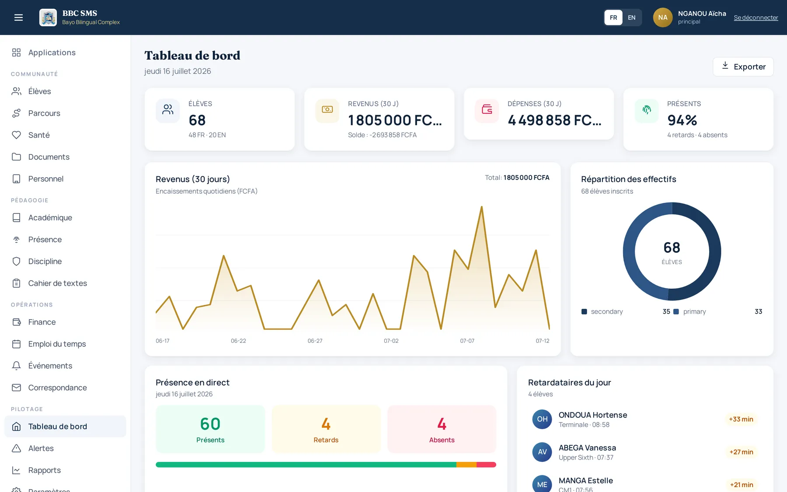
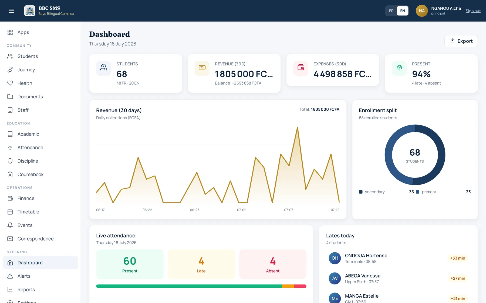
C'est la page d'accueil du personnel. Elle réunit :
- Quatre indicateurs — effectif (réparti FR / EN), revenus et dépenses sur 30 jours, taux de présence du jour.
- Revenus (30 jours) — la courbe des encaissements quotidiens.
- Répartition des effectifs — primaire contre secondaire.
- Présence en direct — présents, retards, absents du jour.
- Retardataires du jour — les cinq retards les plus longs.
- Encaissements récents — les six derniers reçus.
Chaque indicateur n'apparaît que si vous avez accès au module correspondant. Un économe sans droit sur la présence, par exemple, ne verra pas le taux de présence. C'est le comportement attendu.
La carte « Alertes & rappels » n'est pas connectée au module Alertes. Ses trois lignes — dont « Lecteur d'empreintes — opérationnel » et « Sauvegarde quotidienne — Effectuée à 02:00 » — sont des textes fixes : il n'y a ni contrôle du lecteur, ni tâche de sauvegarde derrière. Seul le taux de présence de la ligne du milieu est réel. Pour les vraies alertes, ouvrez le module Alertes.
Le bouton Exporter de cette page n'est pas actif.
This is the staff home page. It gathers:
- Four indicators — enrolment (split FR / EN), 30-day revenue and expenses, today's attendance rate.
- Revenue (30 days) — the daily collections curve.
- Enrollment split — primary against secondary.
- Live attendance — present, late and absent today.
- Lates today — the five longest delays.
- Recent payments — the last six receipts.
Each indicator only appears if you have access to the matching module. A bursar without attendance rights, for instance, will not see the attendance rate. That is expected behaviour.
The “Alerts & reminders” card is not connected to the Alerts module. Its three lines — including “Fingerprint reader — operational” and “Daily backup — Completed at 02:00” — are fixed text: there is no reader health check and no backup job behind them. Only the middle line's attendance rate is real. For genuine alerts, open the Alerts module.
This page's Export button is not active.
AlertesAlerts
Élèves à risque, détection précoce · permission alertsAt-risk students, early detection · alerts permission
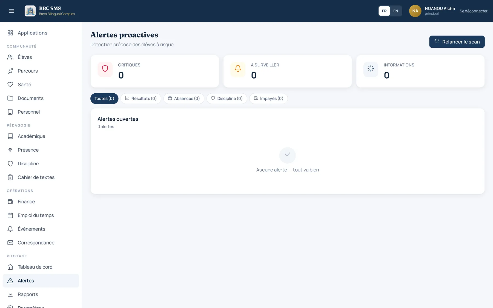
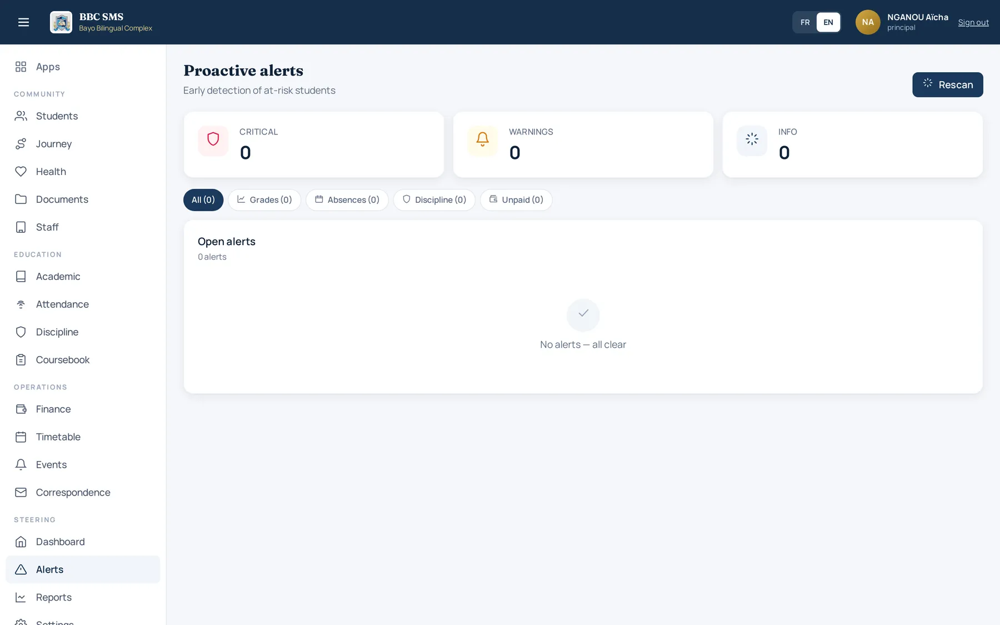
Le module repère les élèves à risque et les classe en trois niveaux : Critiques, À surveiller et Informations.
Le cycle de traitement
- Relancer le scan lance une nouvelle analyse et rafraîchit la liste.
- Vu marque l'alerte comme prise en compte — vous l'avez lue, vous vous en occupez.
- Résoudre la clôture une fois le problème traité.
Les puces filtrent par nature : Toutes, Résultats, Absences, Discipline, Impayés. Le nombre entre parenthèses indique le volume de chaque catégorie.
Lancez « Relancer le scan » après une séance de saisie de notes ou en fin de semaine : les alertes sont recalculées à partir des données du moment.
The module spots at-risk students and sorts them into three levels: Critical, Warnings and Info.
The handling cycle
- Rescan runs a fresh analysis and refreshes the list.
- Ack marks the alert as acknowledged — you have read it and you are on it.
- Resolve closes it once the problem is handled.
The chips filter by kind: All, Grades, Absences, Discipline, Unpaid. The number in brackets shows each category's volume.
Run “Rescan” after a grade-entry session or at the end of the week: alerts are recomputed from the data as it stands.
RapportsReports
Analytique école entière · permission reportsSchool-wide analytics · reports permission
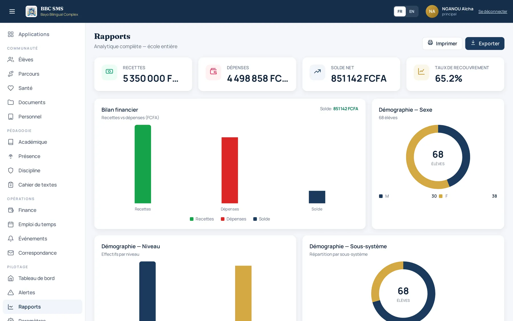
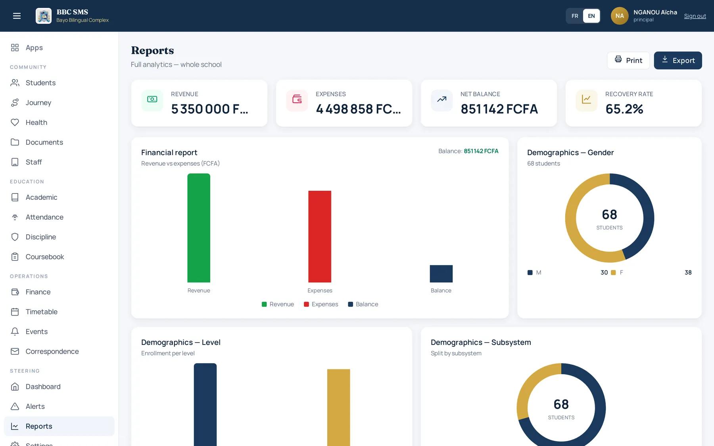
La vue analytique de l'établissement : recettes, dépenses, solde net et taux de recouvrement, puis la démographie par sexe, par niveau et par sous-système.
Présence mensuelle
Choisissez un mois puis cliquez Charger. Le tableau ne se met pas à jour tout seul : le bouton est nécessaire.
Ici, Exporter produit un vrai fichier CSV. Attention à deux détails : il n'exporte que le tableau de présence mensuelle (ni les finances, ni la démographie), et il ne produit rien si vous n'avez pas d'abord cliqué Charger. Le bouton Imprimer, lui, imprime la page entière.
The school's analytics view: revenue, expenses, net balance and recovery rate, then demographics by gender, level and sub-system.
Monthly attendance
Pick a month then click Load. The table does not refresh on its own: the button is required.
Here, Export produces a genuine CSV file. Mind two details: it exports only the monthly attendance table (neither finance nor demographics), and it produces nothing unless you clicked Load first. The Print button prints the whole page.
ParamètresSettings
Configuration, rôles, messagerie · permission settingsConfiguration, roles, e-mail · settings permission
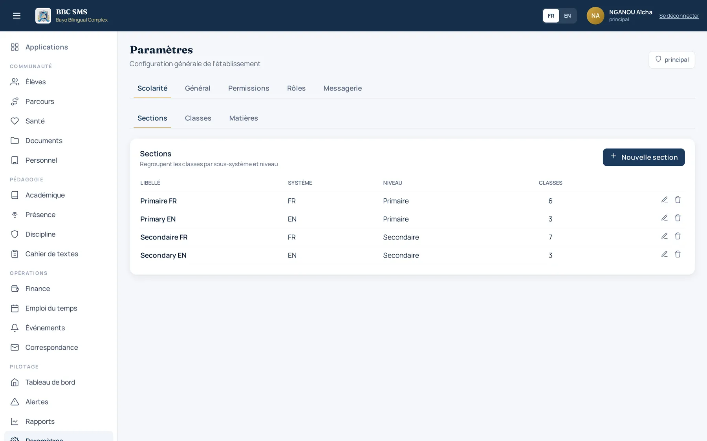
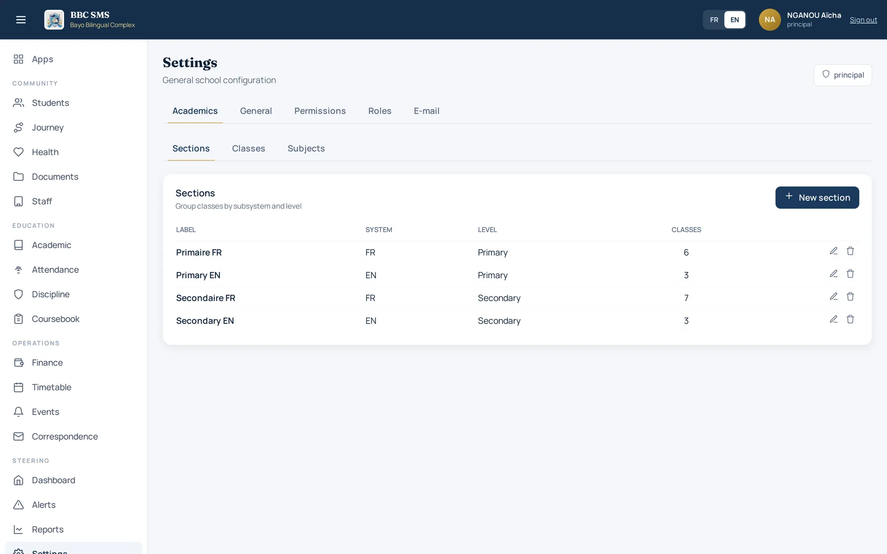
Cinq onglets : Scolarité, Général, Permissions, Rôles et Messagerie.
Scolarité — la fondation de l'application
C'est ici que tout commence, dans cet ordre :
- Sections — regroupent les classes par sous-système et niveau (ex. « Secondaire FR »). Un libellé, un sous-système (Francophone / Anglophone) et un niveau (Primaire / Secondaire).
- Classes — un nom (ex.
6ème A) et la section de rattachement. Le bouton reste désactivé tant qu'aucune section n'existe. - Matières — un code, un nom en français, un nom en anglais et un coefficient (celui qui pondère les bulletins).
Les suppressions demandent confirmation.
Permissions
La matrice rôle × module, décrite en détail dans Rôles & permissions.
Messagerie
La configuration du serveur SMTP : activation, hôte, port, utilisateur, mot de passe, adresse et nom d'expéditeur, STARTTLS. Laissez le mot de passe vide pour conserver celui déjà en place.
La carte Notifications propose un seul déclencheur — Création d'un utilisateur — et un outil de test d'envoi. Enregistrez la configuration avant de tester.
Général n'est pas configurable : nom, ville, année scolaire, devise, langues et fiche du lecteur d'empreintes y sont en dur dans l'application. Ce que vous y lisez (« En ligne », « Dernière synchro : il y a 3 min », le modèle du lecteur) est décoratif et ne reflète aucun équipement réel.
Rôles est en lecture seule : la version 1.0 ne permet pas de créer ou de modifier un rôle. Les six rôles livrés sont ceux dont vous disposez ; ce que vous pouvez ajuster, ce sont leurs permissions.
Five tabs: Academics, General, Permissions, Roles and E-mail.
Academics — the application's foundation
Everything starts here, in this order:
- Sections — group classes by sub-system and level (e.g. “Secondaire FR”). A label, a sub-system (Francophone / English) and a level (Primary / Secondary).
- Classes — a name (e.g.
Form 1 A) and the section it belongs to. The button stays disabled until a section exists. - Subjects — a code, a French name, an English name and a coefficient (the one that weights report cards).
Deletions ask for confirmation.
Permissions
The role × module matrix, described in detail under Roles & permissions.
The SMTP server configuration: enable, host, port, username, password, from address and from name, STARTTLS. Leave the password blank to keep the existing one.
The Notifications card offers a single trigger — User created — and a test sending tool. Save the configuration before testing.
General is not configurable: name, city, academic year, currency, languages and the fingerprint-reader card are hardcoded in the application. What you read there (“Online”, “Last sync: 3 min ago”, the reader model) is decorative and reflects no real equipment.
Roles is read-only: version 1.0 does not allow creating or editing a role. The six shipped roles are what you have; what you can adjust are their permissions.
Portail parentParent portal
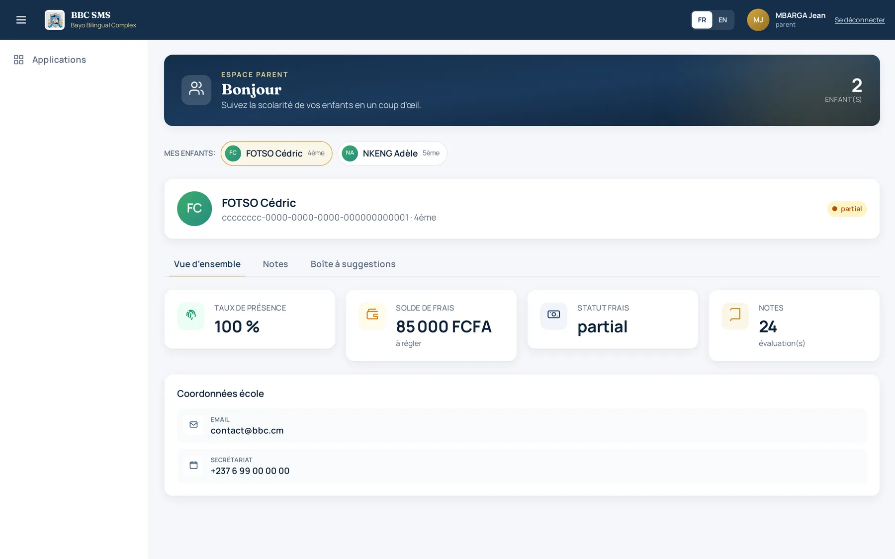
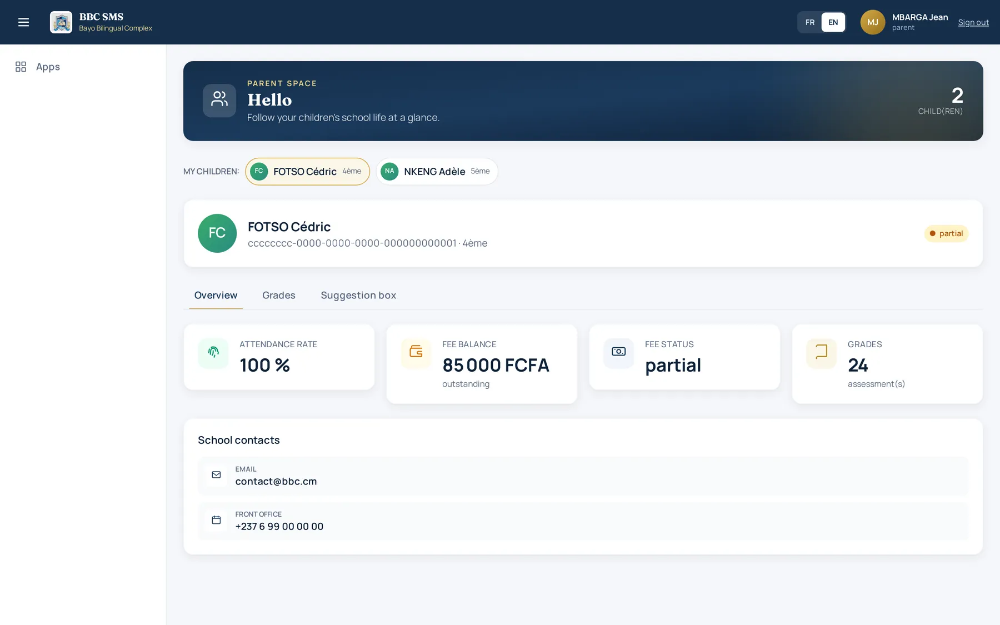
Les comptes de rôle parent arrivent directement ici après connexion. Le portail ne comporte pas les modules du personnel.
Choisir un enfant
La barre Mes enfants présente une pastille par enfant rattaché au compte. Cliquez pour basculer. Le premier enfant est sélectionné automatiquement.
Les trois onglets
- Vue d'ensemble — taux de présence, solde de frais, statut des frais et nombre d'évaluations.
- Notes — le détail par matière et par séquence, avec la moyenne en bas de tableau.
- Boîte à suggestions — pour écrire à l'établissement : choisissez une catégorie (Suggestion, Question, Réclamation, Remerciement), rédigez, puis Envoyer le message. La carte Mes messages conserve l'historique.
Un compte parent se crée depuis la fiche de l'élève : Élèves → sélectionner l'élève → Comptes parents → Ajouter. Réutilisez le même identifiant pour rattacher plusieurs enfants à un même parent.
Sous le nom de l'enfant s'affiche un identifiant technique (une longue suite de caractères) à la place du matricule : c'est une anomalie connue, sans conséquence sur les données.
La moyenne de l'onglet Notes est une moyenne simple : elle ne tient pas compte des coefficients des matières. Elle peut donc différer de la moyenne du bulletin officiel, qui, elle, est pondérée. Le bulletin fait foi.
Les coordonnées de l'école affichées en bas de la vue d'ensemble sont des exemples figés dans l'application, pas les coordonnées configurées de l'établissement.
Accounts with the parent role land here directly after signing in. The portal does not carry the staff modules.
Picking a child
The My children bar shows one pill per child attached to the account. Click to switch. The first child is selected automatically.
The three tabs
- Overview — attendance rate, fee balance, fee status and number of assessments.
- Grades — the detail by subject and sequence, with the average at the foot of the table.
- Suggestion box — to write to the school: choose a category (Suggestion, Question, Complaint, Thanks), write, then Send message. The My messages card keeps the history.
A parent account is created from the student's profile: Students → select the student → Parent accounts → Add. Reuse the same username to attach several children to one parent.
Under the child's name a technical identifier (a long string) is shown instead of the student ID: this is a known glitch, with no consequence for the data.
The average on the Grades tab is a plain mean: it ignores subject coefficients. It may therefore differ from the official report card's average, which is weighted. The report card prevails.
The school contacts shown at the foot of the overview are examples fixed in the application, not the school's configured details.
Limites connues de la version 1.0Known limitations of version 1.0
Cette section récapitule ce qui, dans l'interface, a l'air de fonctionner mais ne fonctionne pas encore. Elle vous évitera de croire une action effectuée alors qu'elle ne l'est pas.
Rien n'est envoyé aux parents, automatiquement
C'est le point le plus important. Malgré les libellés « SMS », « Envoyer », « Notifier les parents » et les mentions WhatsApp, aucun message ne quitte le système dans cette version. Concrètement :
| Écran | Ce que le bouton fait réellement |
|---|---|
| Discipline → SMS / Envoyer | Rien. Le message est rédigé mais jamais expédié. |
| Événements → Notifier les parents | Marque l'événement « notifié » et compte les élèves concernés. N'envoie rien. |
| Correspondance → Envoyer | Consigne la note dans le carnet. Ne l'expédie pas. |
| Élèves → SMS (fiche élève) | Rien. |
| Présence → « SMS auto envoyés » | Libellé fixe, sans compteur ni envoi. |
La seule brique de messagerie réellement opérationnelle est le serveur SMTP de Paramètres → Messagerie, utilisé à ce jour pour un seul événement : la création d'un utilisateur.
Boutons présents mais inactifs
- Exporter — sur le Tableau de bord, Élèves (« Exporter liste »), Personnel et Finance. Le seul export réel de l'application est celui de Rapports (CSV de la présence mensuelle).
- Exporter d'Académique — n'exporte pas : il ouvre l'impression du navigateur, comme Imprimer.
- Imprimer d'Emploi du temps — inactif ; passez par Ctrl+P.
- Oublié ? sur l'écran de connexion.
Écrans non raccordés
- Finance → Débiteurs et Dépenses : les deux onglets sont vides.
- Configuration des frais : aucun écran (les montants sont posés en base).
- Paramètres → Général : entièrement en dur, rien n'y est modifiable.
- Paramètres → Rôles : lecture seule, pas de création de rôle.
- Documents : pas de téléversement de fichier — c'est un registre de références.
- Présence : pas de pointage manuel ; seul le lecteur alimente le tableau.
Affichages trompeurs
- Le voyant « En ligne » du lecteur d'empreintes (Présence et Paramètres → Général) est toujours vert : l'équipement n'est jamais interrogé.
- La carte « Alertes & rappels » du Tableau de bord affiche des textes fixes, dont une « sauvegarde quotidienne » qui n'existe pas.
- La Masse salariale additionne des taux horaires à des salaires mensuels : le total n'est pas exploitable pour les vacataires.
- Finance et Emploi du temps affichent des identifiants techniques là où on attendrait un nom d'élève ou d'enseignant.
- Le portail parent affiche un identifiant technique à la place du matricule, et une moyenne non pondérée.
Suppressions sans confirmation
La confirmation avant suppression n'est pas uniforme. Demandent confirmation : un élève, un compte parent, un département, une section, une classe, une matière. Ne demandent rien et suppriment immédiatement : un employé, une année de parcours, un passage à l'infirmerie, une activité, un document, une décision d'orientation, un incident, une entrée de cahier de textes, un créneau d'emploi du temps, un événement, une note de correspondance.
Ergonomie
- Dans plusieurs listes (Parcours, Santé, Documents, Cahier de textes, Correspondance), les icônes Modifier et Supprimer ne se révèlent qu'au survol de la ligne : elles sont difficiles à atteindre sur écran tactile.
- Quand un champ obligatoire manque, le bouton Enregistrer reste souvent muet plutôt que d'afficher une erreur. Si rien ne se passe, vérifiez les champs marqués obligatoires dans ce guide.
- Les listes déroulantes de type et de sanction du module Discipline restent en français en mode anglais.
This section lists what looks like it works but does not yet. It will save you from believing an action was carried out when it was not.
Nothing is sent to parents, automatically
This is the most important point. Despite the “SMS”, “Send” and “Notify parents” labels and the WhatsApp mentions, no message leaves the system in this version. Concretely:
| Screen | What the button actually does |
|---|---|
| Discipline → SMS / Send | Nothing. The message is drafted but never dispatched. |
| Events → Notify parents | Marks the event “notified” and counts the students concerned. Sends nothing. |
| Correspondence → Send | Files the notice in the book. Does not dispatch it. |
| Students → SMS (student profile) | Nothing. |
| Attendance → “Auto SMS sent” | A fixed label, with no counter and no sending. |
The only genuinely operational messaging piece is the SMTP server under Settings → E-mail, used today for a single event: user creation.
Buttons that are present but inert
- Export — on the Dashboard, Students (“Export list”), Staff and Finance. The application's only real export is on Reports (monthly attendance CSV).
- Academic's Export — does not export: it opens the browser print dialog, exactly like Print.
- Timetable's Print — inert; use Ctrl+P.
- Forgot? on the sign-in screen.
Screens not wired up
- Finance → Debtors and Expenses: both tabs are empty.
- Fee configuration: no screen (amounts are set in the database).
- Settings → General: entirely hardcoded, nothing is editable.
- Settings → Roles: read-only, no role creation.
- Documents: no file upload — it is a register of references.
- Attendance: no manual check-in; only the reader feeds the board.
Misleading displays
- The fingerprint reader's “Online” light (Attendance and Settings → General) is always green: the device is never polled.
- The Dashboard's “Alerts & reminders” card shows fixed text, including a “daily backup” that does not exist.
- Payroll adds hourly rates to monthly salaries: the total is unusable for contractors.
- Finance and Timetable show technical identifiers where a student or teacher name would be expected.
- The parent portal shows a technical identifier instead of the student ID, and an unweighted average.
Deletions without confirmation
Delete confirmation is not uniform. Do confirm: a student, a parent account, a department, a section, a class, a subject. Ask nothing and delete at once: an employee, a journey year, an infirmary visit, an activity, a document, an orientation decision, an incident, a coursebook entry, a timetable slot, an event, a correspondence notice.
Usability
- In several lists (Journey, Health, Documents, Coursebook, Correspondence), the Edit and Delete icons only reveal themselves on hover: they are hard to reach on a touch screen.
- When a required field is missing, the Save button often stays silent rather than showing an error. If nothing happens, check the fields marked required in this guide.
- The Discipline module's type and sanction dropdowns stay in French in English mode.
FAQ
Un module a disparu de mon menu.
Votre rôle n'a plus l'accès. Demandez au principal de vérifier Paramètres → Permissions, puis déconnectez-vous et reconnectez-vous : les permissions ne sont relues qu'à la connexion.
Je viens de changer une permission, l'utilisateur ne voit rien.
C'est normal. Il doit se reconnecter. Le changement est bien enregistré côté serveur, mais son interface travaille avec la photo de ses droits prise à la connexion.
« Enregistrer » ne fait rien.
Un champ obligatoire est vide. La version 1.0 n'affiche pas toujours d'erreur. Reportez-vous à la section du module dans ce guide : les champs obligatoires y sont indiqués.
Le bulletin d'un élève est bloqué.
Il a un solde de frais impayé. Enregistrez le règlement dans Finance ; le bulletin se débloque une fois le solde à zéro.
Comment obtenir un PDF d'un bulletin ou d'un reçu ?
Cliquez Imprimer et choisissez « Enregistrer au format PDF » dans la fenêtre du navigateur. La génération de PDF n'est pas encore intégrée à l'application.
Le parent ne voit pas son enfant.
Le compte n'est pas rattaché. Ouvrez la fiche de l'élève → Comptes parents → Ajouter, en réutilisant l'identifiant existant du parent.
Je ne trouve pas la liste des débiteurs.
L'onglet existe mais n'est pas raccordé dans la version 1.0 (voir Limites connues). Les bulletins bloqués et le portail parent restent des indicateurs fiables de dette.
La page Présence n'affiche plus rien de récent.
Si elle est restée ouverte depuis la veille, elle affiche encore la journée précédente. Rechargez-la (F5).
A module has vanished from my menu.
Your role lost access. Ask the principal to check Settings → Permissions, then sign out and back in: permissions are only re-read at sign-in.
I just changed a permission and the user sees nothing.
That is expected. They must sign in again. The change is saved on the server, but their interface works from the snapshot of their rights taken at sign-in.
“Save” does nothing.
A required field is empty. Version 1.0 does not always show an error. Check this guide's section for the module: required fields are marked there.
A student's report card is blocked.
They have an outstanding fee balance. Record the payment in Finance; the report card unblocks once the balance reaches zero.
How do I get a PDF of a report card or a receipt?
Click Print and choose “Save as PDF” in the browser dialog. PDF generation is not built into the application yet.
A parent cannot see their child.
The account is not linked. Open the student's profile → Parent accounts → Add, reusing the parent's existing username.
I cannot find the debtor list.
The tab exists but is not wired up in version 1.0 (see Known limitations). Blocked report cards and the parent portal remain reliable indicators of debt.
The Attendance page shows nothing recent.
If it has been open since yesterday, it still shows the previous day. Reload it (F5).
BBC SMS v1.0 — Bayo Bilingual Complex, Maroua, Cameroun. Guide utilisateur. Les captures illustrent un jeu de données de démonstration. BBC SMS v1.0 — Bayo Bilingual Complex, Maroua, Cameroon. User guide. Screenshots illustrate a demonstration dataset.